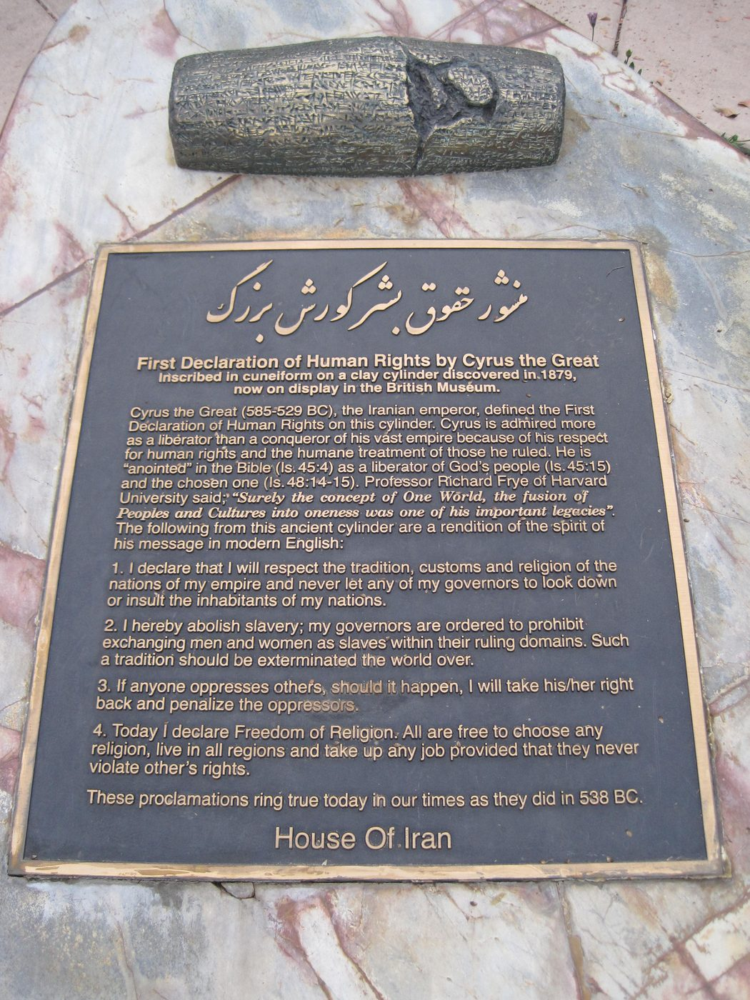
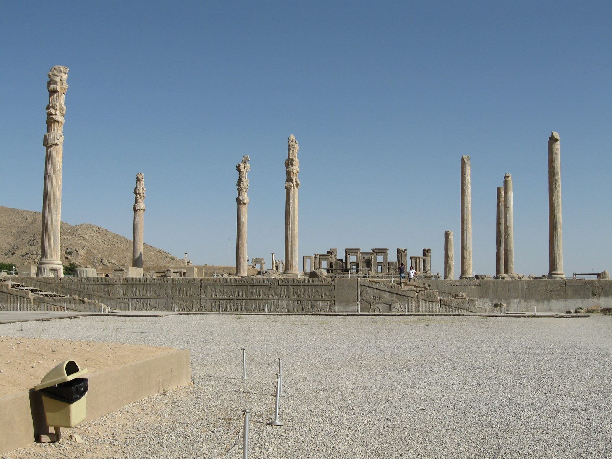

Unit 1 · The investigation of ancient sites and sources · Lesson 8
Bringing it together: timed OVPRL and unit checkpoint
What do you know across the whole unit, and can you analyse a source you have never seen, against the clock?
Year 11 Ancient History · Present with → or space · Read on a phone with R

Checkpoint · 2 minutes · the review item the class found hardest
First, one thing to fix from the last review
What does each OVPRL letter ask?
Origin: who made it, when, where? · Value: what can it tell us for this inquiry? · Purpose: why, and for whom? · Reliability: how far can we trust it, and for what? · Limitations: what can it not tell us?
Name one survey method and what it can find without digging.
Ground-penetrating radar: radar pulses detect buried features. (Or magnetometry: ditches, pits and burnt areas; or LiDAR: the shape of the ground, even under trees.) Survey finds features; it does not date them, and digging must test what it shows.
Give one value of petroglyphs as a source.
They are images people chose to make, still in the place where they were made, and some are many thousands of years old (Murujuga has one of the world’s largest collections).
Who holds the knowledge of what Aboriginal rock engravings mean, and who decides what is shared?
Aboriginal Custodians hold it as Cultural Knowledge, and they decide what is shared, following ICIP protocols. Outsiders cannot read the meaning from the image alone.
Name two methods of authentication, with an example.
Any two: scientific dating, material or chemical analysis, microscope study, stylistic comparison, provenance research. Piltdown Man: fluorine tests (1949), then chemical tests and the microscope (1953).
This sentence has no main verb: “Darius’s legitimisation of his rule through the Behistun inscription.” Fix it so the noun group makes a claim.
Add a main verb: Darius’s legitimisation of his rule through the Behistun inscription shows how he wanted his kingship to be seen.
Then books closed: ten questions across the whole unit.
Checkpoint · books closed · 8 minutes · press K for the timer · answer in full sentences
Ten questions across the whole unit
dot point 1 · excavation, recording and analysisdot point 2 · authenticitydot point 3 · reconstructing the pastdot point 4 · texts, inscriptions, petroglyphs, iconography
- dot point 1On a new site, a coin minted in 64 CE is found in undisturbed Layer 3. What can you say about when Layer 3 formed, and what is this principle called?
- dot point 1What can radiocarbon dating date, and what is one limit of it?
- dot point 1What can ground-penetrating radar detect, and what can it not prove? Give an example.
- dot point 2Name two methods of authentication, and say what each one tests.
- dot point 2How was Piltdown Man shown to be a forgery?
- dot point 3The restored ‘Priest-King’ fresco from Knossos: which part is evidence, and which part is interpretation?
- dot point 3An object is bought from a dealer with no record of where it was found. Why is it limited as evidence?
- dot point 4What is the Behistun inscription reliable for, and what is it not reliable for? Why?
- dot point 4Give one value and one limitation of the ‘Standard of Ur’ as iconography.
- dot point 4Why can outside researchers not reliably interpret many Aboriginal rock engravings, and what guides how they are studied?
Checkpoint · mark in a different colour · 1 mark each · both parts needed for the mark
Mark your answers: questions 1–5
| Q | Question | A strong answer |
|---|---|---|
| 1 | dot point 1 coin of 64 CE in Layer 3 | Layer 3 formed in or after 64 CE, not before (it is undisturbed, so the coin was not carried down into it): the coin gives the earliest possible date. This is terminus post quem, ‘the date after which’. |
| 2 | dot point 1 radiocarbon dating | Once-living (organic) material such as wood, bone or charcoal. Limits: organic material only (stone, metal and pottery cannot usually be dated directly); back to about 50,000 years; it gives an age range that must be calibrated, not an exact year. |
| 3 | dot point 1 ground-penetrating radar | Buried features, without digging. But it shows only patterns that must be interpreted and tested: at Durrington Walls, radar ‘stones’ turned out to be post holes when two were dug (2016); in Tutankhamun’s tomb, the ‘doorways’ claimed in 2015 were not found again by later scans. Either example earns the mark. |
| 4 | dot point 2 two methods of authentication | Any two: scientific dating (radiocarbon for organic material; thermoluminescence for when fired clay was last heated) · material or chemical analysis (what it is made of) · microscope study of tool marks (how it was made) · stylistic comparison (does it match genuine works?) · provenance research (its ownership history). |
| 5 | dot point 2 Piltdown Man | Fluorine tests (1949) showed the remains were far too young to be a ‘missing link’; in 1953 chemical tests and the microscope showed the jaw came from an ape (probably an orangutan) whose teeth had been filed down to look human, and that the bones had been stained to look old. |
Checkpoint · mark in a different colour · 1 mark each · both parts needed for the mark
Mark your answers: questions 6–10
| Q | Question | A strong answer |
|---|---|---|
| 6 | dot point 3 the Knossos ‘Priest-King’ | Evidence: the broken pieces of painted plaster relief found in 1901 (parts of a crown, a man’s chest, a leg, arms). Interpretation: joining them into one man (Evans first thought they came from three figures; most scholars now think several), the repainted parts, the pose and the name ‘Priest-King’. The restored panel is evidence of what Evans and his restorers imagined, not direct evidence of how the wall looked. |
| 7 | dot point 3 an object with no findspot | It has no findspot, so its context is lost: it cannot be connected to a place, a layer or other finds, so it can’t be dated by its layer or checked against its site, its meaning is much harder to work out, and it may be a fake. |
| 8 | dot point 4 the Behistun inscription | Reliable for how Darius wanted his kingship to be seen; on its own, weak evidence of how he actually became king, because it gives only the winner’s account. |
| 9 | dot point 4 the ‘Standard of Ur’ | Value: it shows how war and kingship were pictured (the tallest figure receives bound prisoners while chariots and soldiers fight), and some details match real finds (the helmets). Limitation: no words, names or date; no one knows what the object was for (‘Standard’ was Leonard Woolley’s guess); its present mount is a modern restoration. |
| 10 | dot point 4 Aboriginal rock engravings | Their meaning is Cultural Knowledge held by Aboriginal Custodians; the Custodians decide what is shared, following ICIP protocols, so researchers use only Community-endorsed material, with permission. |
Checkpoint · 2 minutes · your score, dot point by dot point
Tally your score by dot point
| Dot point | Questions | My score | If it is low, revise |
|---|---|---|---|
| 1 · excavation, recording and analysis | 1–3 | / 3 | Lessons 2 and 3: layers, dating methods, survey |
| 2 · authenticity | 4–5 | / 2 | Lesson 6: methods and cases |
| 3 · reconstructing the past | 6–7 | / 2 | Lesson 7: beliefs, gaps, provenance |
| 4 · texts, inscriptions, petroglyphs, iconography | 8–10 | / 3 | Lessons 1, 4 and 5: OVPRL on each kind of source |
For each dot point, hold up fingers for your score when it is called. Your teacher uses the count to plan the first lessons on Persepolis.
Circle it. Revise it first, using the quick checks at the end of those lessons in Read mode.
Learning intentions and success criteria · 2 minutes
Today’s goals
- bring together what we have learned about sites and sources
- write an OVPRL analysis of an unseen source under time conditions
- answer retrieval questions on all four dot points
- write a timed OVPRL analysis that uses question-relative reliability
- name my next step for timed source analysis
Syllabus outcomes: AH-11-05 analyses different types of sources for evidence to support a historical account or argument · AH-11-06 explains differing interpretations and representations of the past · AH-11-07 communicates historical understanding, applying historical knowledge, terms and concepts. Life Skills: AH-LS-08 uses sources to form conclusions about the past · AH-LS-11 communicates information about the past using historical terms and concepts.
Note-making · the routine for the whole course
How to structure your notes
questions and key terms, written after
short phrases, arrows (→ leads to), abbreviations (c. = about; BCE = Before the Common Era)
- 1Rule up the page firstA cue column about a quarter of the page wide; title and date at the top; room for a summary at the bottom.
- 2Listen and look, then writeDon’t copy while a slide is being explained. Phrases, not sentences.
- 3Write your own notes at each ✎ checkpointThen compare with the model notes, one row at a time. Add what you missed in a second colour.
- 4Write the cue questions afterwardsUse exam verbs: explain, analyse, assess. To revise, cover your notes and answer the cues.
- 5Finish with a three-sentence summaryOne checkpoint today, if time or at home: the Cyrus Cylinder. Today’s main writing is a timed paragraph on lined paper, not notes.
Key vocabulary · the unit word wall, and four new words for today’s source
Words for an OVPRL on a royal inscription
| For your paragraph | Meaning |
|---|---|
| OVPRL | The school’s source-analysis questions: Origin, Value, Purpose, Reliability, Limitations. |
| reliability | How far a source can be trusted for a particular question. |
| perspective | The point of view of an individual or group, in the past or the present. |
| propaganda | A message made to persuade people to see a ruler or a cause in a particular way. |
| provenance | Where an object was found and its history of ownership since; without it, an object loses its context and may be a fake. |
| For today’s source | Meaning |
|---|---|
| inscription | Words carved or written on a hard surface such as stone, clay or metal. |
| cuneiform | Wedge-shaped writing pressed into clay or carved in stone, used in ancient Mesopotamia and Persia for languages such as Akkadian (Babylonian) and Old Persian. |
| foundation inscription | A royal inscription buried in the foundations of a building or wall, recording the king’s building work. |
| representation | A later picture, text or object that portrays the past in a particular way, such as a film, a plaque or a museum label. |
| anachronism | Placing an idea or object in a time it does not belong to, such as judging the past by much later values. |
1 · I do · recap · the class checklist from Lesson 4 · cold call
What a strong OVPRL paragraph does
Our class checklist: can you recall the five points before they appear?
- 1opens with a provenance phrasewho made the source, when, where, and from what position
- 2uses precise evidence for its valuea short quotation or detail from the source, tied to the inquiry question
- 3explains purpose and perspectivewith a relating verb: presents … as, portrays, reveals
- 4judges reliability for this questionreliable for … but not for … because …, with modality and a precise evaluative verb
- 5names a limitation and ends decisivelylinks ideas with nominalisation; the last sentence answers the question, with no roadmap or summary
“The inscription is biased.”
“It is reliable for … but not for … because …”
Say it for the Behistun inscription.
The Behistun inscription is reliable for how Darius wanted his kingship to be seen, but, on its own, not for how he actually became king, because it gives only the winner’s account.
1 · I do · the inquiry question · how to use the time
Today’s question, and your 25 minutes
How useful is the Cyrus Cylinder for understanding how Persian kings presented their rule?
What does this question ask you to judge?
The image of kingship the source projects (its claims, its language and its audience), not simply what Cyrus did. ‘How useful’ means value, reliability and limitations, all for that question.
Deconstructed: verb how useful (not a NESA key word; our department reads it as evaluate: NESA, Glossary of key words, “Make a judgement based on criteria. Determine the value of.”) · topic: the Cyrus Cylinder · limits: how Persian kings presented their rule · do: one OVPRL paragraph that ends on a judgement.
- 0–5Reading time: think only. Deconstruct the question (verb · topic · limits · do); read the source for its provenance; plan O V P R L, with one piece of evidence for each, all in your head. No writing, no marking.
- 5–6Mark the source sheet and jot your plan (Foundation: the planning grid).
- 6–10Write: provenance phrase and value, with a short quotation.
- 10–15Purpose and perspective, with a relating verb.
- 15–22Reliability for this question, then limitations.
- 22–25A decisive last sentence; check it answers the question.
No notes: the source sheet only. Connected prose, not dot points. Your paragraph is collected.
2 · You do · timed practice · reading time · 5 minutes · press K for the timer · think only: no writing, no marking
Your source: the Cyrus Cylinder
- What: a clay cylinder about 22 cm long, inscribed in Babylonian (a form of Akkadian) in cuneiform; broken and incomplete
- Who: written by a Babylonian scribe, presumably on the orders of Cyrus II, king of Persia (ruled 559–530 BCE)
- When: after Cyrus captured Babylon in 539 BCE
- Where: written to be buried in the foundations of Babylon’s city wall; found at Babylon (southern Iraq) in 1879 by Hormuzd Rassam; now in the British Museum
[line 7, of Nabonidus] In his mind, reverential fear of Marduk, king of the gods, came to an end. [lines 11–12, of Marduk] He inspected and checked all the countries, seeking for the upright king of his choice. He took the hand of Cyrus, king of the city of Anshan, and called him by his name, proclaiming him aloud for the kingship over all of everything. [line 17] He had him enter without fighting or battle right into Shuanna; he saved his city Babylon from hardship. He handed over to him Nabonidus, the king who did not fear him. [line 20] I am Cyrus, king of the universe, the great king, the powerful king, king of Babylon, king of Sumer and Akkad, king of the four quarters of the world, … [lines 25–26, of the people of Babylon] … had endured a yoke not decreed for them, I soothed their weariness; I freed them from their bonds(?). [lines 30–32] From [Shuanna] I sent back to their places … the gods who lived therein, and made permanent sanctuaries for them. I collected together all of their people and returned them to their settlements, … [line 43, rebuilding Babylon’s wall] I saw within it an inscription of Ashurbanipal, a king who preceded me; …
The Cyrus Cylinder, Babylon, after 539 BCE · trans. Irving Finkel (British Museum) · Marduk = the chief god of Babylon · Nabonidus = the last king of Babylon (555–539 BCE) · Anshan = Cyrus’s home kingdom in Persia · Shuanna = a name for Babylon · Sumer and Akkad = southern Mesopotamia · Ashurbanipal = a king of Assyria (668–627 BCE) · [ ] = words restored by the translator · (?) = an uncertain word
2 · You do · timed practice · write · 20 minutes · press K for the timer · your paragraph is collected
Write your OVPRL paragraph
- Answer: How useful is the Cyrus Cylinder for understanding how Persian kings presented their rule?
- One connected paragraph: Origin → Value → Purpose → Reliability → Limitations.
- Short quotations as evidence; reliable for what?; end with a decisive judgement.
Then add a second paragraph: evaluate the modern representation of the Cylinder as a ‘charter of human rights’. Use the extension sheet.
| Ask | My evidence (a word, a line number) | |
|---|---|---|
| O | Who made it, when, where, and from what position? | |
| V | What can it show about how Persian kings presented their rule? | |
| P | Why was it made, and for whom? Whose perspective is it? | |
| R | Reliable for … but not for … because … | |
| L | What can it not tell us? |
Use the vocabulary list and the OVPRL routine on page 2 of your booklet.
3 · We do · self-assess · 2 minutes · use a different colour
Check your paragraph against the class checklist
- Find the sentence where you did each point. Underline it and write the number beside it.
- Tick the points you can find.
- A point with no sentence is your next step: circle its number.
3 · We do · the teacher’s exemplar (Band 6 standard) · one press per checklist point
An exemplar, annotated against the checklist
The checklist, point by point
Now yours: mark one place where your paragraph does what the exemplar does, and one place where it falls short.
3 · We do · swap with a partner · 2 minutes · then hand in your paragraph
One warm comment, one cool comment
“Point … works because your sentence …”
“Next time, try … so that …”
Write both in the margin of your partner’s paragraph and sign your name. Comment on the analysis, not the handwriting.
Point 4 works because you say the Cylinder is reliable for how Cyrus wanted the Babylonians to see him, not for what actually happened in 539 BCE.
Next time, try ending on your judgement instead of “In conclusion, the source is useful”, so that your last sentence answers the question.
Extension sheet · for your second paragraph · print it · a modern representation of the Cylinder
A ‘charter of human rights’? Evaluate the representation

First Declaration of Human Rights by Cyrus the Great … The following from this ancient cylinder are a rendition of the spirit of his message in modern English: … 2. I hereby abolish slavery; my governors are ordered to prohibit exchanging men and women as slaves within their ruling domains.
Plaque at the House of Iran, Balboa Park, San Diego, USA · date of the plaque unknown; photographed in 2009
… had endured a yoke not decreed for them, I soothed their weariness; I freed them from their bonds(?).
trans. Irving Finkel (British Museum) · (?) = the translator is unsure of this word
- From the late 1950s the Cylinder began to be called the first charter of human rights, partly because the Shah of Iran and other politicians promoted Cyrus as a liberal and enlightened monarch (John Curtis, British Museum).
- 1971: the Shah’s government made the Cylinder the official symbol of its celebrations of 2,500 years of Persian monarchy; the British Museum lent it to Tehran, and in October the Shah’s sister presented a cast of it to the United Nations.
- Experts today disagree. The British Museum says “the cylinder says nothing of human rights”, but calls the return of deported peoples “a significant reversal” of earlier kings’ policies. Amélie Kuhrt (University College London) argues that its talk of “restoration” is “a familiar local rhetoric deployed by foreign victors”, not a new policy.
To what extent does the Cylinder itself support this representation? Weigh the plaque against lines 25–26 and the experts’ views.
Extension · HPGE · a model second paragraph · after the writing, or at home
Evaluating the ‘charter of human rights’ representation
To what extent does the Cylinder itself support its modern representation as a ‘charter of human rights’?
The modern representation of the Cylinder as a ‘charter of human rights’ reveals at least as much about the twentieth century as about Cyrus. According to John Curtis of the British Museum, the label spread from the late 1950s, partly through the Shah’s promotion of Cyrus as a liberal monarch, and in 1971 the Cylinder became the official symbol of the Pahlavi celebrations of Persian monarchy. Representations such as the San Diego plaque go further, offering “a rendition of the spirit of his message” in which Cyrus declares, “I hereby abolish slavery”. No such words appear in Finkel’s translation: the nearest passage says that Cyrus soothed the weariness of Babylonians who “had endured a yoke not decreed for them” and “freed them from their bonds(?)”, an uncertain reading that concerns Babylon’s own people. The British Museum reads it as Cyrus ending the labour service Nabonidus had imposed: a local measure, not a universal principle. Experts still disagree about how new Cyrus’s policies were: the Museum observes that “the cylinder says nothing of human rights”, yet calls the return of deported peoples “a significant reversal” of earlier kings’ policies, whereas Amélie Kuhrt argues that its language of restoration is “a familiar local rhetoric deployed by foreign victors”. Whether or not its restorations were new, the label is best seen as an anachronism that projects modern values onto an ancient royal proclamation, although its very persistence shows how persuasive the Cylinder’s self-portrait of a just king has proved.
The moves to look for: the representation’s origin and purpose · the source tested against it, quotation by quotation, uncertain words included · expert views, named, and where they disagree · a decisive judgement that keeps the hedge.
Notes checkpoint If time · or at home
The Cyrus Cylinder
Write your own notes first. Then compare, row by row, and add what you missed in a second colour.
Finish your notes If time · or at home
Summary: three sentences
- How does the Cyrus Cylinder present Cyrus’s rule?
- What is it reliable for, and what is it not reliable for?
- Why is the ‘charter of human rights’ label a problem?
The Cyrus Cylinder, a foundation inscription written by a Babylonian scribe after 539 BCE, presents Cyrus as the king chosen by Marduk to replace an impious Nabonidus and to restore Babylon’s gods and peoples. It is reliable evidence of how Cyrus wished his rule to be seen in Babylon, but not of how his conquest was experienced or of how every Persian king presented his rule. Calling it a ‘charter of human rights’ is an anachronism: the label dates from the twentieth century, and the text itself says nothing of human rights.
Exit ticket · 3 minutes · before you leave
One sentence: your next step
“My next step in timed source analysis is … because …”
One point from the class checklist (not ‘write better’) · the evidence for it, from today’s self-assessment, your partner’s cool comment or the exemplar · and why it matters for answering the question. For example: My next step is to judge reliability for the question, because I wrote that the Cylinder was biased without saying what it is reliable for.
Then check yourself against today’s three “I can” statements.
Check · 2 minutes · where we go next
Next: Persepolis, a king’s rule set in stone

- Cyrus, the king of today’s Cylinder, founded the Persian Empire.
- Darius I, the king of the Behistun inscription, began the great terrace at Persepolis, in south-western Iran, about 518 BCE; his son Xerxes I and grandson Artaxerxes I kept building.
- UNESCO describes it as the seat of government, but one “designed primarily to be a showplace and spectacular centre for the receptions and festivals of the kings and their empire”.
How might a showplace help a king present his rule?
Visitors to the king’s receptions and festivals would have seen his power displayed in stone: UNESCO notes reliefs of the king, guards, dignitaries and tribute bearers. Like the Cylinder, it seems to have been designed to persuade: that is UNESCO’s reading, and our next lessons test it.
Practice and review · 1 of 3 · true, false, justify
True or false? Justify your answer
- 1The Cyrus Cylinder is written in Old Persian. False — it is in Babylonian (a form of Akkadian), in cuneiform, by a Babylonian scribe.
- 2The Cylinder was written to be buried in the foundations of Babylon’s city wall. True — the British Museum reads this from the text itself: it is a foundation inscription.
- 3Because the Cylinder praises Cyrus, it is useless to historians. False — reliable for what? It is strong evidence of how Cyrus presented his rule in Babylon, weak evidence of how that rule was experienced.
- 4The Cylinder’s text declares human rights for all peoples. False — the British Museum notes that “the cylinder says nothing of human rights”; the label is a modern representation.
- 5A coin minted in 64 CE dates the undisturbed layer it is found in to exactly 64 CE. False — the layer formed in or after 64 CE (terminus post quem).
- 6Cyrus began building Persepolis. False — Darius I began the terrace about 518 BCE; Cyrus founded the empire.
Practice and review · 2 of 3 · writing
Sharpen the analysis
Improve: “The Cyrus Cylinder is biased because Cyrus wanted to look good.” Use a relating verb and say what it is reliable for.
Written in Babylon’s traditional royal language, the Cylinder presents Cyrus as Marduk’s chosen king, so it is reliable for how Cyrus wished his rule to be seen in Babylon, but not for how his conquest was experienced.
How useful is the Cyrus Cylinder for understanding how Cyrus captured Babylon in 539 BCE?
For the capture itself the Cylinder is limited evidence: its claim that Cyrus entered Babylon “without fighting or battle” may well be true of the city itself, yet it says nothing of the battle at Opis, where, according to the British Museum, the Persian army had defeated the Babylonian forces, so it records the part of the conquest Cyrus wanted remembered rather than the whole of it.
Move this claim down the modality scale so that it matches the evidence: “The Cyrus Cylinder proves that Cyrus freed the people of Babylon.”
The Cylinder claims that Cyrus freed the people of Babylon “from their bonds(?)”, but as an inscription that speaks in Cyrus’s own voice it is probably better evidence of how he wanted his rule to be seen than of what he actually did.
Compare the Cyrus Cylinder and the Behistun inscription as evidence of how Persian kings presented their rule.
Both inscriptions present a king chosen by a god, but they speak to different audiences. At Behistun, Darius I declares, “By the grace of Auramazda am I king”, in three languages carved high on a cliff beside a main road. The Cyrus Cylinder, by contrast, speaks for Cyrus only in Babylonian, was buried in Babylon’s wall, and presents him as the choice of Marduk, the city’s own god. Read together, they suggest that Persian kings shared a claim to divine favour but adapted its language to their audience; neither, however, can show how their subjects received these claims.
Practice and review · 3 of 3 · cover your notes and answer from memory
Quick checks
- Who made the Cyrus Cylinder, when, and for what purpose? A Babylonian scribe, presumably on Cyrus II’s orders, after he captured Babylon in 539 BCE: a foundation inscription for Babylon’s wall, presenting Cyrus as Marduk’s chosen king.
- Explain how the Cylinder presents Cyrus’s rule. As the choice of Marduk replacing an impious Nabonidus; a peaceful entry into Babylon; relief for its people; gods and peoples returned home: conquest shown as restoration.
- Assess its reliability for how Persian kings presented their rule. Reliable for how Cyrus presented himself in Babylon (to its god and future kings, and probably to its people); less so for Persian kingship in general (it follows Babylonian conventions; Darius at Behistun credits Ahuramazda); not for how the rule was experienced.
- Why is the ‘charter of human rights’ label contested? It is a modern representation (from the late 1950s, promoted under the Shah; the official symbol in 1971). The text says nothing of human rights, and experts disagree about whether its restorations were new: the British Museum calls them a significant reversal; Kuhrt calls them traditional Babylonian royal rhetoric.
- Name the five points of the class checklist. Provenance phrase · precise evidence for value · purpose and perspective, with a relating verb · reliability for this question · a limitation and a decisive end.
- Who began Persepolis, and when? Darius I, about 518 BCE.
Sources and credits
Where everything comes from
The Cyrus Cylinder (British Museum 90920), trans. Irving Finkel, as published by the British Museum on its page Cyrus Cylinder – translation, checked against the archived page; also in I. Finkel (ed.), The Cyrus Cylinder: The King of Persia’s Proclamation from Ancient Babylon (I.B. Tauris, 2013). © Trustees of the British Museum; quoted briefly for teaching.
Facts and quotations about the Cylinder: British Museum, collection record 90920 (checked via the Internet Archive, November 2026), its highlight page and its 2010 statement; J. Curtis and A. Kuhrt, abstracts for The Legacy of Cyrus the Great (Freer|Sackler, 2013). The Balboa Park plaque: transcribed from the photograph credited below. These short extracts (British Museum, Curtis, Kuhrt, UNESCO and the plaque) are quoted briefly, with citations, for teaching and criticism.
The Behistun inscription, §V, trans. L. W. King and R. C. Thompson (London: British Museum, 1907; public domain), from Lesson 4. Persepolis: UNESCO World Heritage Centre. Checkpoint answers: Lessons 1–7; the Natural History Museum (Piltdown); U. Günkel-Maschek, Annual of the British School at Athens 119 (2024) (Knossos); the British Museum (the ‘Standard of Ur’). Also consulted: the Nabonidus Chronicle (ABC 7), trans. A. K. Grayson, on Livius.org, and Encyclopaedia Britannica, “Akkadian language”.
The exemplar, the extension paragraph, the models and the summary were written for this lesson.
Outcomes and content: NSW Education Standards Authority (NESA), Ancient History 11–12 Syllabus (2024). © NESA.
Teacher resource: Piltdown Hoax presentation and worksheet (class notebook).
- The Cyrus Cylinder (British Museum 90920) · Photo: Mike Peel (www.mikepeel.net), modified by مانفی · CC BY-SA 4.0 · source
- Plaque at the House of Iran, Balboa Park, San Diego · Photo: BrokenSphere · CC BY-SA 3.0 · source
- Columns on the terrace at Persepolis · Photo: Forough.Parhoudeh · CC BY-SA 4.0 · source


All images are openly licensed, and were resized for the web (the Cylinder was also cropped). Each is shared under the licence shown.